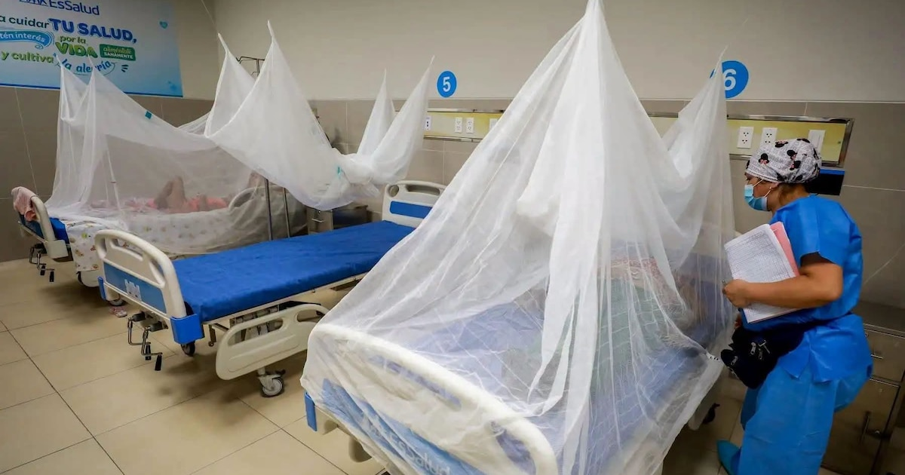
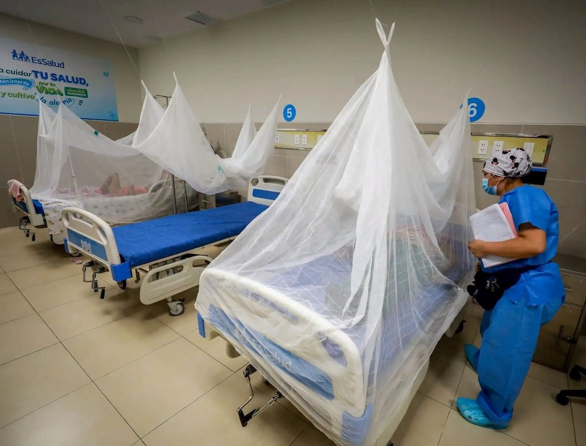

El centro de salud El Milagro, en Trujillo, enfrenta colapso por el aumento de casos de dengue, con pacientes atendidos en sillas y en el suelo ante la falta de capacidad.

Fuente: Infobae / reportes locales.
El centro de salud El Milagro, en el distrito de Huanchaco, provincia de Trujillo, región La Libertad, enfrenta una situación crítica ante el incremento de casos de dengue. La alta demanda de atención ha superado la capacidad del establecimiento, y algunos pacientes han tenido que ser atendidos en sillas o incluso en el suelo, según reportes difundidos por medios locales.
La escena refleja la presión que enfrentan los servicios de salud de primer nivel cuando se producen brotes de enfermedades transmitidas por vectores. El dengue, transmitido por la picadura del mosquito Aedes aegypti, puede generar cuadros febriles, dolor intenso y, en casos graves, complicaciones que requieren atención oportuna.
Personal y usuarios del establecimiento han reportado que el flujo de pacientes con síntomas compatibles con dengue aumentó de forma sostenida, lo que provocó largas esperas y falta de espacio en las áreas de atención. La situación se agrava por las limitaciones de infraestructura y personal en un contexto de emergencia sanitaria local.
Ante este escenario, las autoridades de salud de La Libertad han sido alertadas sobre la necesidad de reforzar la respuesta, tanto en la capacidad de atención como en las acciones de control vectorial para evitar la propagación del mosquito transmisor.

La demanda por casos febriles ha superado la capacidad de atención del establecimiento en Huanchaco.
El dengue puede presentarse con fiebre alta, dolor de cabeza intenso, dolor detrás de los ojos, dolores musculares y articulares, náuseas, vómitos y sarpullido. La mayoría de casos se recupera con manejo adecuado, pero algunos pueden evolucionar a formas graves.
Las señales de alarma incluyen dolor abdominal intenso y continuo, vómitos persistentes, sangrado de encías o nariz, vómitos con sangre, somnolencia o irritabilidad y dificultad para respirar. Ante cualquiera de estos signos, se debe acudir de inmediato a un establecimiento de salud.
La principal medida de prevención es eliminar los criaderos del mosquito Aedes aegypti, que se reproduce en agua limpia y estancada. Las autoridades recomiendan lavar y cepillar recipientes donde se almacena agua, tapar tanques y cilindros, eliminar objetos inservibles que puedan acumular agua y cambiar el agua de floreros y bebederos de animales con frecuencia.
Eliminar criaderos de mosquitos en el hogar es la medida más efectiva para prevenir el dengue.
La situación en El Milagro evidencia la necesidad de fortalecer la capacidad de respuesta de los centros de salud ante brotes de dengue, especialmente en zonas donde la presencia del vector es persistente. La combinación de atención clínica oportuna, vigilancia epidemiológica y control vectorial es fundamental para reducir el impacto de la enfermedad.
Las autoridades de salud han reiterado el llamado a la población para colaborar con la eliminación de criaderos y acudir a los establecimientos ante síntomas, evitando la automedicación, especialmente con aspirina o ibuprofeno, que pueden aumentar el riesgo de sangrado en casos de dengue.